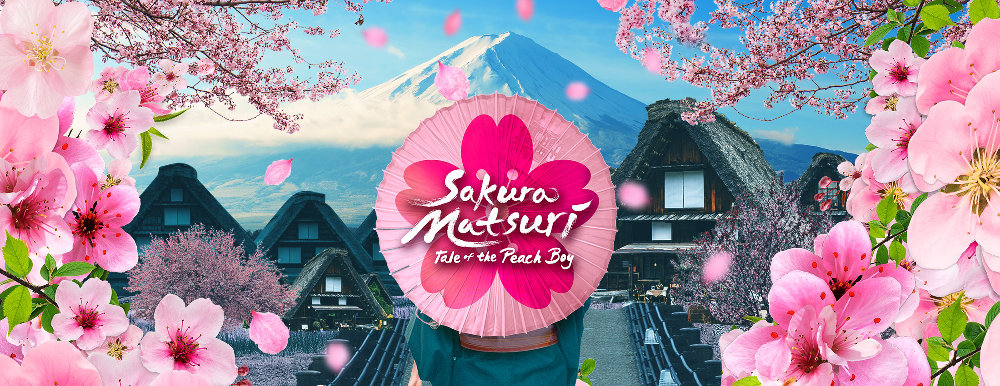
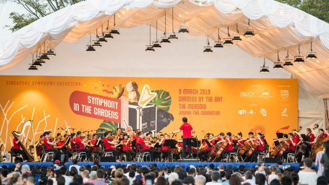

Sakura Matsuri – Tale of the Peach Boy Floral Display
Fri, 6 Mar 2020 - Sun, 29 Mar 2020 (Daily 9.00am - 9.00pm) @ Flower Dome
Witness the blossoming of spring at Sakura Matsuri – Tale of the Peach Boy as the Flower Dome transforms into a Japanese springtime landscape. Follow the adventures of the legendary Momotaro, a boy born from a peach, and meet the three adorable warriors that fought alongside him. Amidst a quaint backdrop featuring Gassho-style farmhouses with their distinctive, steep thatched roofs, a Japanese tea house and the quintessential torii gates, take in the ephemeral beauty of over 20 varieties of cherry and peach blossoms in this one-of-a-kind floral display.
Symphony in the Gardens
Sun, 15 Mar 2020 (6.30pm - 7.30pm) @ The Meadow
Join us at Gardens by the Bay for a splendid open-air concert brought to you by the Singapore Symphony Orchestra (SSO)! Headed by Conductor Darrell Ang, the SSO will perform classical music pieces by Mozart, Lully, Tchaikovsky, Brahms as well as Prokofiev.